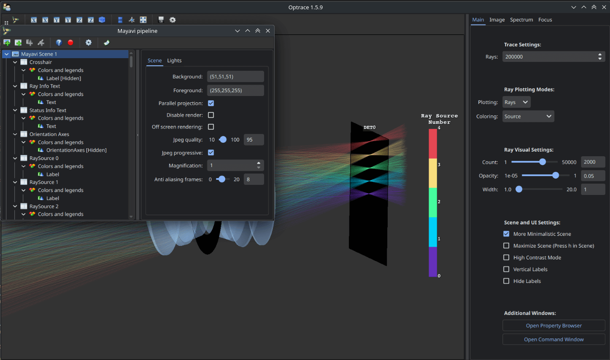
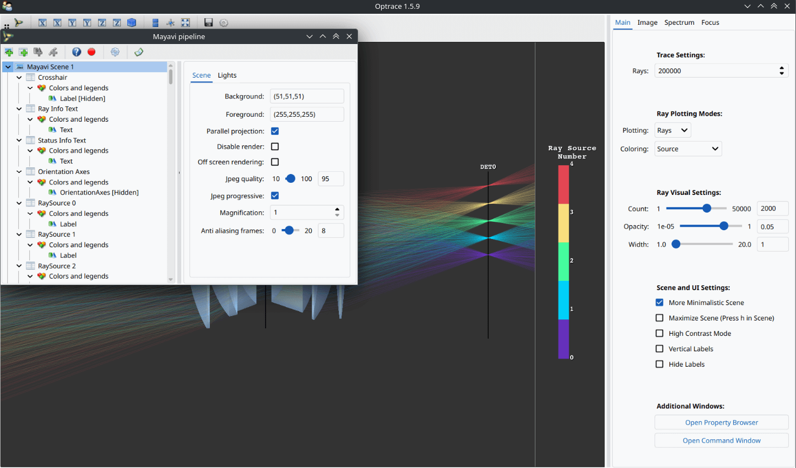
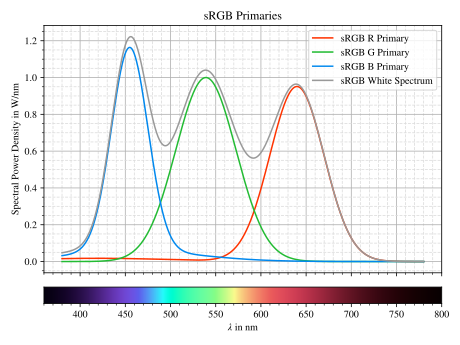

4.1. Overview#
4.1.1. Structure#
Topic |
Descriptions |
Classes/Functions |
Links |
|---|---|---|---|
Paraxial Analysis |
Finding principial planes, focal points, object and image distances, exit and entrance pupil |
||
Paraxial Imaging |
Image simulation by convolution with a rendered point spread function |
||
General Geometrical Optics and Image/Spectrum Simulation |
Sequential Raytracing of optical setups. Analysis of ray paths, simulation of detector images and spectra, focus finding. |
|
Raytracer, Image Classes, Spectrum Classes, Focus Search, Accessing Ray Properties |
Image, Surface, Spectrum and Refractive Index Plotting |
Display images, spectra, surfaces and refractive indices graphically |
||
Image color conversion |
Convert or access image colors |
||
Graphical Setup and Visualization |
Graphical display of the tracing scene and traced rays as well as some control features for the simulation |
4.1.2. Namespaces#
optrace s the primary namespace.
While there is a separate sub-namespace for the tracer, called optrace.tracer,
it is automatically included in the main namespace.
import optrace as ot
Classes can be now accessed as ot.Raytracer, ot.CircularSurface, ot.RaySource, ....
optrace provides plotting functionality for images, spectra, media etc.
These plotting functions are included in the optrace.plots namespace.
import optrace.plots as otp
The GUI is included in the namespace optrace.gui.
Only the TraceGUI class is relevant there, so it can be directly imported in the main namespace:
from optrace.gui import TraceGUI
4.1.3. Global Options#
Global options are controlled through the attributes of the
class optrace.global_options.
4.1.3.1. Progressbar#
For calculation-intensive tasks a progress bar is displayed inside the terminal that displays the progress and estimated remaining time. It can be turned off globally by:
ot.global_options.show_progressbar = False
There is also a context manager available for turning it off temporarily:
with ot.global_options.no_progress_bar():
do_something()
4.1.3.2. Warnings#
optrace outputs warnings of type OptraceWarning
(which are a custom subclass of UserWarning). These can be filtered using the warnings python module.
A simple way to silence them, for example when doing many automated tasks, is by writing:
ot.global_options.show_warnings = False
There is also a context manager available for turning it off temporarily:
with ot.global_options.no_warnings():
do_something()
4.1.3.3. Multithreading#
By default, multithreading parallelizes tasks like raytracing and image rendering. However, this is undesired in some cases, especially when debugging or running multiple raytracers in parallel. Multithreading can be turned off with:
ot.global_options.multi_threading = False
4.1.3.4. Wavelength Range#
optrace is optimized for operation for the visible wavelength range of 380 - 780 nm. The range can be extended by:
ot.global_options.wavelength_range = [300, 800]
Note that most presets like refractive indices are not defined for regions outside the default range. This can lead to issues when using these presets.
4.1.3.5. Spectral Colormap#
Spectral plots (spectrum, refractive index, ray coloring) use a spectral colormap that maps wavelength values to their corresponding colors. For the visible range, this leads to a rainbow-like mapping.
When working in the infrared or ultraviolet region, they would be mapped to a similar hue and a nearly black color. To make different values discernible, a custom mapping function should be supplied instead. One example could be:
import matplotlib.pyplot as plt
ot.global_options.spectral_colormap = lambda wl: plt.cm.viridis((wl-300)/800)
In this example the colormap is adapted to use the viridis colormap from pyplot, where 300 is mapped to the lowest value of 0 and 800 to the highest value of 1. The specified function should take a wavelength numpy array (of some length N) as argument and return a two dimensional array with RGBA values between 0-1 and shape (N, 4).
The colormap can be reset by setting it to None.
4.1.3.6. UI Dark Mode#
The UI dark mode is enabled by default.
It can be changed by setting the ui_dark_mode parameter.
Changes are applied to all current GUI windows as well as new ones.
To deactivate the mode, use:
ot.global_options.ui_dark_mode = False
{kind=link}

Fig. 4.1 With ui_dark_mode enabled.#
{kind=link}

Fig. 4.2 With ui_dark_mode disabled.#
4.1.3.7. Plot Dark Mode#
For the content of plotting windows, there is a separate option plot_dark_mode.
It is also enabled by default.
To deactivate it, use:
ot.global_options.plot_dark_mode = False
Deactivating it is useful for documentation or article output, where image are typically shown on a white background.
Note that changes are only applied to new pyplot windows, not already opened ones.

Fig. 4.3 With |
 Fig. 4.4 With |
{kind=link}